BOLETÍN EPIDEMIOLÓGICO NACIONAL
N° 763 - Semana Epidemiológica 26 - Año 2025
Desde 22/06 al 28/06 - Fecha de publicación: 10/07/2025
Semana epidemiológica actual:
Desde 22/06 al 28/06 - Fecha de publicación: 10/07/2025
Semana epidemiológica actual:
Aquí puedes añadir detalles sobre el calendario de vacunación, la importancia de la doble o triple viral, quiénes deben vacunarse, etc. Puedes incluir texto, listas, imágenes, etc.
Aquí aparecería la información detallada al hacer clic en "Más Info" para Dengue. Puedes poner texto, imágenes o incluso otros gráficos aquí dentro.
Información adicional sobre los síntomas, tratamientos o medidas de precaución para Hantavirus.
Detalles sobre la campaña de vacunación, grupos de riesgo y beneficios de la vacuna contra la Influenza.
El sarampión es una enfermedad viral, altamente contagiosa, que puede presentarse en todas las edades. Su gravedad es mayor en niños menores de 5 años o desnutridos, en los cuales puede causar graves complicaciones respiratorias como neumonía y del sistema nervioso central como convulsiones, meningoencefalitis, ceguera, encefalomielitis postinfecciosa con retraso mental grave y trastornos degenerativos tardíos que no tienen tratamiento o incluso causar la muerte.
Se transmite mediante gotas de aire de la nariz, boca, o garganta de una persona infectada. El virus puede persistir en el aire o sobre superficies, siendo activo y contagioso por 2 horas.
No existe ningún tratamiento antiviral específico contra el virus del sarampión, solo existen medidas de sostén clínico y de sus complicaciones. Puede prevenirse con la vacunación.
Se enfatiza la importancia de la vacunación como medida preventiva clave. Se recomienda a la población verificar su estado de vacunación y completar los esquemas.
Todas las personas desde el año de vida deben tener esquema de vacunación completo contra el sarampión y la rubéola, según Calendario Nacional de Vacunación:
De 12 meses a 4 años: deben acreditar UNA DOSIS de vacuna triple viral.
Niños de 5 años y más, adolescentes y personas adultas deben acreditar al menos DOS DOSIS de vacuna con componente contra sarampión y rubéola aplicada después del año de vida (doble o triple viral) o contar con serología IgG positiva para sarampión y rubéola.
Las personas nacidas antes de 1965 se consideran inmunes y no necesitan vacunarse.
El antecedente de vacunación se deberá constatar a través del registro nominal de vacunación o por presentación del carnet de vacunación donde conste el esquema completo para sarampión y la rubéola, según Calendario Nacional de Vacunación.
Entre las SE 1 y 25 de 2025 se notificaron en el componente de Vigilancia Clínica del SNVS 524.114 casos de ETI, con una tasa de incidencia acumulada de 1104,0 casos/ 100.000 habitantes.
Para el mismo periodo de los años 2015 – 2025, el mayor número de notificaciones de ETI se registró durante 2022 (630.664 casos), mientras que en 2020 y 2021 se reportó un nivel de casos inferior en comparación con los años previos. En el corriente año se registra un menor número de casos que los 3 años anteriores, siendo superado además por las notificaciones de los años 2016 y 2017.
Gráfico 1: Enfermedad Tipo Influenza: Corredor endémico semanal- Históricos 5 años: 2017-2024. SE 1 a 25 de 2025 . Argentina.
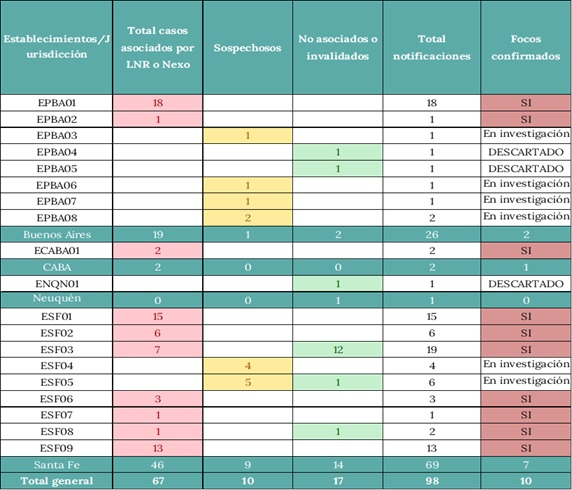Hasta la SE25 de 2025 se notificaron en el componente de Vigilancia Clínica del SNVS 70.420 casos de Neumonía, con una incidencia acumulada de 148,3 casos/ 100.000 habitantes.
Entre 2015 y 2025, las notificaciones de neumonía mostraron el mayor número de casos en 2022. Las notificaciones presentan una disminución sostenida entre 2016 y 2018, con un ligero ascenso en 2019 respecto del año anterior. En 2020 se registró un nuevo descenso de casos, volviendo a incrementarse durante los años 2021-2022, y mostrando una disminución en 2023-2025.
Gráfico 2: Neumonía: Corredor endémico semanal- Históricos 5 años: 2017-2024. SE 1 a 25 de 2025 . Argentina.
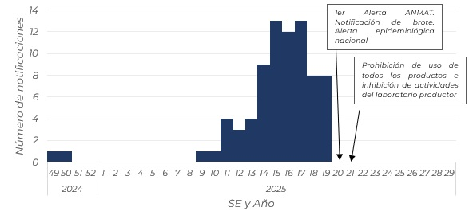En las primeras 25 semanas epidemiológicas de 2025, se notificaron en el componente de Vigilancia Clínica del SNVS 49.013 casos de Bronquiolitis, con una tasa de incidencia acumulada de 3388,8 casos/100.000 habitantes.
En relación a los años previos, las notificaciones de bronquiolitis entre las SE 1 y 25 alcanzaron su pico en 2016, seguido de un descenso en 2017 y 2018. En 2019, presentaron un incremento respecto al año anterior, con un nuevo descenso en 2020 y 2021, cuando se registró el menor número de notificaciones. Para los años 2022 a 2023 se verifica un aumento en las notificaciones de bronquiolitis, mientras que en 2024 las notificaciones presentaron un nuevo descenso para las primeras 25 semanas. En relación al corriente 2025, los casos permanecen en valores menores en comparación con la mayoría de los años históricos, con excepción de los años 2020 y 2021.
Gráfico 3: Bronquiolitis en menores de 2 años: Corredor endémico semanal- Históricos 5 años: 2017-2024. SE 1 a 25 de 2025 . Argentina.
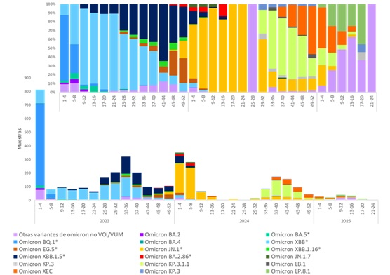Desde la SE11 se observa un aumento sostenido en el número de casos de Influenza, con predominio de Influenza A (H1N1), con un adelanto del ascenso estacional respecto de lo registrado en años anteriores. Además, en relación a VSR se registra un aumento en las detecciones a partir de SE12, con inicio de actividad estacional a partir de la SE20. Las detecciones de SARS-CoV-2 permanecen en niveles bajos.
Gráfico 7. Distribución de influenza, SARS-CoV-2 y OVR identificados por Semana epidemiológica. SE01/2024 a SE25/2025. Argentina.
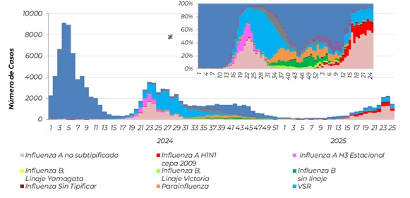En relación a virus influenza, en lo que va de 2025, se registraron casos todas las semanas y, desde la SE11, se verifica un ascenso de las detecciones de influenza, con predominio de influenza A no subtipificado y H1N1. En las últimas 2 SE (24 y 25) se notificaron un total de 2.742 detecciones de Influenza
La vacunación antirrábica es de carácter obligatorio en perros y gatos (Ley Antirrábica 22.953) e incluye una primovacunación a los 3 meses de edad y revacunaciones anuales durante toda la vida del animal. La vacunación de los animales de importancia económica (bovinos, equinos, ovejas, entre otros) contra la rabia es voluntaria, excepto en las siguientes situaciones, en que la vacunación es obligatoria: frente a la aparición de un caso confirmado de rabia paresiante (vacunación de emergencia) y dentro del área endémica, en los siguientes animales y tipos de establecimiento:
La vigilancia del evento “Rabia animal” se lleva a cabo ante la sospecha clínica de la enfermedad en mamíferos, con notificación obligatoria e inmediata de todo caso sospechoso. El sistema busca detectar tempranamente la circulación del virus rábico, identificar reservorios y prevenir la transmisión a otras especies, incluyendo humanos.
Entre 2019 y 2024 se notificaron un total de 927 casos confirmados de rabia animal en Argentina. El año con mayor número de casos fue 2022, con 224 registros confirmados, mientras que el menor número se reportó en 2021, con 109 casos. La tendencia nacional muestra una notificación fluctuante, con un pico en 2022, seguido de una disminución en los años posteriores, aunque sin retornar a los valores bajos de 2019 y 2020.
Tabla 1. Casos confirmados de rabia animal según jurisdicción. Argentina, SE 1 a SE 52, período 2019-2024.
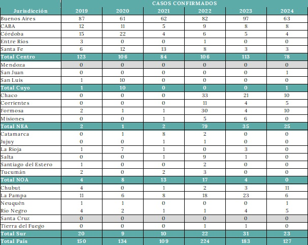Tabla 2. Casos confirmados de rabia animal según especie. Argentina, SE 1 a SE 52, período 2019-2024.
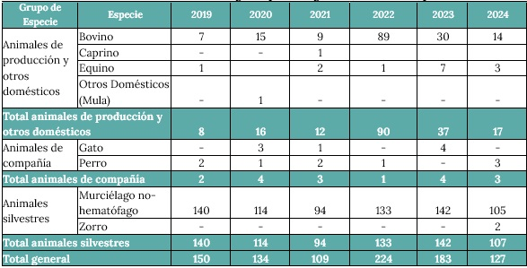Mapa 1. Casos confirmados de rabia animal según grupo de especie por departamento. Argentina, SE 1 a SE 52, período 2019-2024.
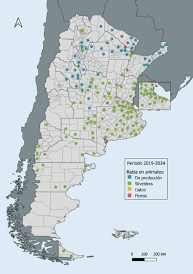Hasta la Semana Epidemiológica 22 del año 2025, se han confirmado 76 casos de rabia animal en 13 de las 24 jurisdicciones del país. Tal como se ha observado en años anteriores, la mayor proporción de casos corresponde a murciélagos no hematófagos, con un total de 67 detecciones, concentradas principalmente en la región Centro. En menor medida, se notificaron casos en animales de producción, particularmente bovinos, en el NEA (4) y NOA (3).
Asimismo, se notificó un caso en un felino doméstico en la provincia de Buenos Aires, correspondiente a la variante antigénica 4, asociada a Tadarida brasiliensis. La distribución geográfica y por especie de los casos confirmados hasta la fecha se presenta en la Tabla 3 y el Mapa 2
Tabla 3. Casos confirmados de rabia animal según jurisdicción. Argentina, SE 01 a 22, año 2025
El Mapa 2 presenta la distribución espacial de los casos confirmados de rabia animal en el país en el año en curso, según grupo de especie y departamento de notificación.
Mapa 2. Casos confirmados de rabia animal según grupo de especie por departamento. Argentina, SE 1 a SE 22/2025.
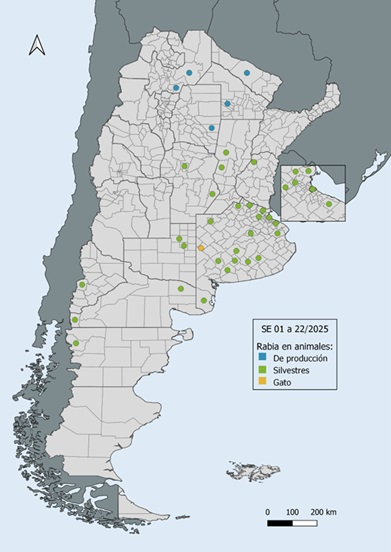La vigilancia, prevención y el control de la rabia se basan fundamentalmente en el componente animal, ya que el humano adquiere la enfermedad principalmente a través del contacto con un animal infectado.
Los diferentes genotipos del Lyssavirus conforman los denominados ciclos de la rabia (circulación del virus en un determinado ámbito) a partir de sus reservorios naturales.
Según las características de los reservorios, estos ciclos se pueden clasificar en terrestres (genotipos adaptados a mamíferos terrestres) y aéreos (genotipos adaptados a mamíferos aéreos: quirópteros -murciélagos hematófagos y no hematófagos, insectívoros y frugívoros-).
En función de la distribución geográfica de la enfermedad, los ciclos también pueden clasificarse en ciclos urbanos o ciclos rurales o silvestres
Figura 1. Transmisión a hospedadores ocasionales entre variantes y ciclos.
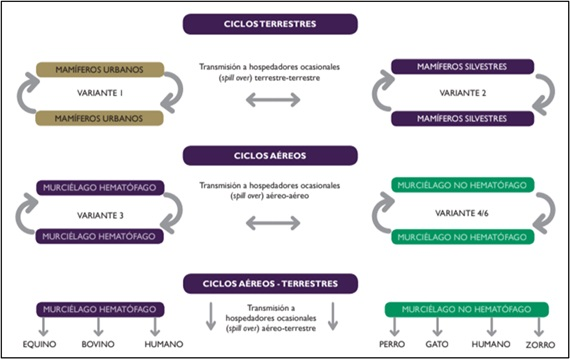Dentro del ciclo urbano, el perro es el principal reservorio del ciclo terrestre (variante antigénica 1). Adicionalmente, los murciélagos insectívoros, Tadarida brasiliensis y Lasiurus cinereus, reservorios de las variantes antigénicas 4 (AgV4) y 6 (AgV6) respectivamente, son las especies más abundantes en zonas urbanas.
Dentro del ciclo rural, los cánidos silvestres (zorro, aguará guazú, aguará popé) y otros mamíferos silvestres, como el coatí, colaboran en el mantenimiento de la variante antigénica 2 (AgV2), mientras que el murciélago hematófago Desmodus rotundus es el reservorio de las variantes antigénicas 3 (AgV3) y 3a (AgV3a).
Los murciélagos actúan como reservorios del ciclo aéreo tanto en ámbitos rurales como urbanos, y especies domésticas como gatos, animales de producción como bovinos y equinos y, en menor medida, otros mamíferos terrestres, pueden funcionar como eslabones entre los ciclos aéreo y terrestre al adquirir variantes mantenidas en quirópteros (fenómeno conocido como spillover).
La vigilancia molecular de la rabia en Argentina se basa en la caracterización genética del virus rábico mediante la secuenciación parcial del gen de la nucleoproteína (N), a partir de muestras derivadas en la Red Nacional de Laboratorios de Rabia. Este enfoque permite identificar el reservorio involucrado, establecer el origen de los casos, detectar variantes emergentes o introducidas desde otros territorios, y diferenciar entre ciclos de transmisión urbanos (terrestres), silvestres y aéreos. Además, constituye una herramienta fundamental para guiar estrategias de prevención, vacunación y control ante brotes, así como para la detección temprana de eventos de derrame (spillover) desde fauna silvestre hacia animales domésticos o humanos.
Durante el período 2020-2025, se han caracterizado variantes genéticas del virus rábico en muestras provenientes de siete provincias argentinas, lo que ha permitido monitorear los ciclos de transmisión y la dinámica de circulación viral en distintas regiones del país (Tabla 4).
Los resultados obtenidos reflejan la coexistencia de ciclos terrestres y aéreos, con evidencia de eventos de spillover hacia hospedadores ocasionales. En el noreste argentino, la variante antigénica 2 (AgV2), asociada al ciclo terrestre, ha mostrado una circulación persistente. En 2020, esta variante fue detectada en un bovino en Corrientes, un aguará popé en Chaco y en un bovino y un canino en Formosa. En 2021 y 2022 se confirmaron nuevos casos en caninos en Formosa, y en 2024 se registraron otras cuatro detecciones (tres en caninos y una en un equino) en Chaco y Formosa. Esta secuencia de hallazgos confirma la existencia de un ciclo enzoótico activo en la región.
Por otra parte, a comienzos de 2025, en la provincia de Buenos Aires, se identificó la variante antigénica 4 (AgV4) en un felino doméstico. El análisis filogenético confirmó que se trató de un evento de spillover desde fauna silvestre, específicamente de Tadarida brasiliensis, un murciélago insectívoros. Este hallazgo pone de relieve la importancia de sostener la vigilancia en animales de compañía ante la potencial transmisión desde reservorios aéreos.
Tabla 4: Resultado caracterización molecular por provincias. 2020-2025
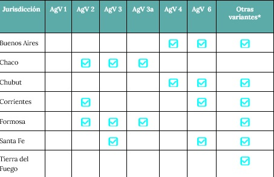Entre los años 2019 y 2024, se notificaron al Sistema Nacional de Vigilancia de la Salud (SNVS 2.0) un total de 9.630 eventos de intoxicación/exposición por monóxido de carbono, de los cuales 6.706 (70%) fueron clasificados como confirmados. La mayor cantidad de los casos confirmados (81%) lo fueron por criterio clínico, seguido por confirmación laboratorial (12%) y, en menor proporción, por nexo epidemiológico (7%). Para todo el periodo se registraron 38 fallecidos distribuidos en todos los años, siendo el 2023 el año con más óbitos (11).
Durante el período analizado, los casos de intoxicación por monóxido de carbono mostraron una notificación constante a lo largo del año, con un aumento estacional sostenido entre los meses de abril y septiembre. El mayor número de casos confirmados se registró en julio de 2024, alcanzando un pico en la semana epidemiológica 28 (n=264).
Gráfico 1: Intoxicación por monóxido de carbono: casos confirmados por semana epidemiológica. 2019-2024, Argentina. (n=6.706).
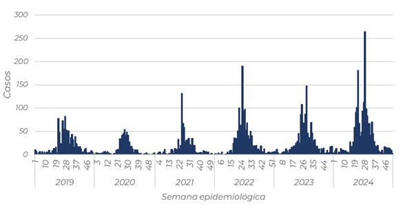En cuanto a la distribución por sexo (n=6.644), el 56% corresponde a sexo femenino y el 44% restante a sexo masculino.
Respecto a la distribución por edad, el 80% de los casos se concentran en los grupos etarios de 0 a 39 años (Gráfico 2). Dichos grupos presentan una incidencia acumulada superior a la registrada en la población general. La mediana de edad es de 21 años
Durante 2025, hasta la SE 26, se notificaron 642 casos confirmados. El 68% de estos se confirmó por criterio clínico, el 21% por laboratorio y el resto por criterio epidemiológico. En cuanto a la distribución por sexo se mantiene como en los años previos, mientras que en cuanto a la edad, se observa que el grupo de edad de 20 a 29 es el más afectado (n=135), seguido del grupo de 0 a 9 años (n=121). En el año en curso se registraron 4 casos fallecidos en el SNVS 2.0 dentro del evento intoxicación por monóxido de carbono.
En la tabla 2 se observa que, tanto a nivel nacional como en las regiones de Cuyo y Sur, el índice epidémico acumulado se encuentra en el valor esperado, mientras que en la región Centro, el mismo supera el valor esperado y en NOA es inferior. En la región del NEA no se puede calcular por no tener casos notificados.
Tabla 2. Intoxicación por monóxido de carbono: casos por jurisdicción y año e índice epidémico, Argentina. SE 1 a 26 de 2020 a 2025 (n=3.411).
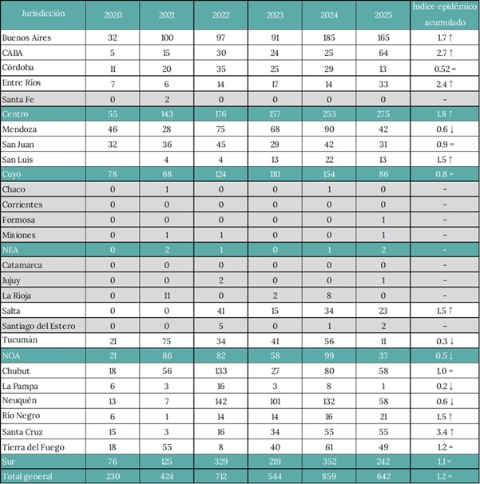A partir de la construcción del corredor endémico cuatrisemanal se observa que los casos de 2025 se encuentran en la zona de alerta, encontrándose en brote entre las semanas epidemiológicas 1 a 8 y 13 a 16 (Gráfico 4).
Gráfico 4. Corredor endémico cuatrisemanal de casos confirmados de intoxicación por monóxido de carbono. Argentina, periodo 2019 - SE 24/2025
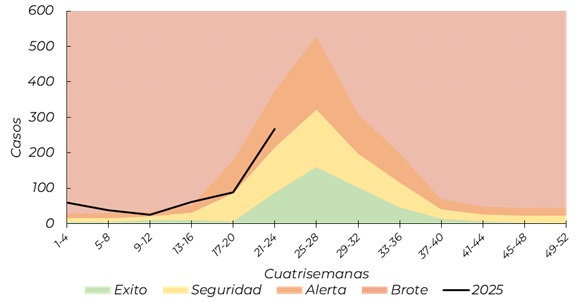De acuerdo con los corredores endémicos acumulados por región se observa que, las regiones de Centro, Sur y Cuyo se encuentran en la zona de alerta de acuerdo al registro de casos de los 5 años previos, observándose para las regiones de Centro y Sur algunas semanas epidemiológicas en brote (1 a 8). La región del NOA se encuentra en zona de seguridad en todo el periodo (Gráfico 5).
Gráfico 5. Corredores endémicos cuatrisemanales de casos confirmados de intoxicación por monóxido de carbono por región. Argentina, periodo 2019 - SE24/2025
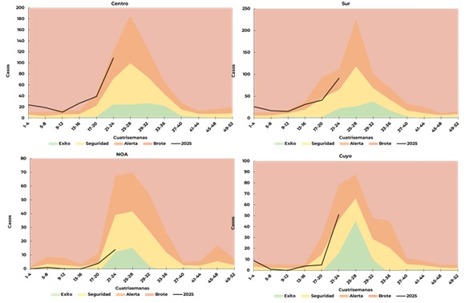';">Para prevenir la intoxicación por monóxido de carbono es elemental el control de las instalaciones y el buen funcionamiento de artefactos, así como es importante mantener los ambientes bien ventilados.
El ENARGAS impulsa medidas tales como: